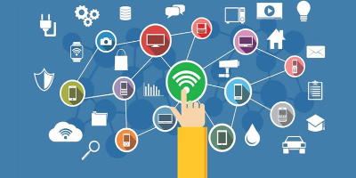
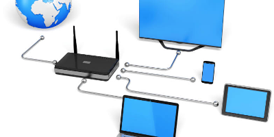
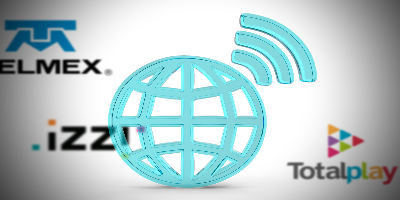
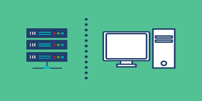
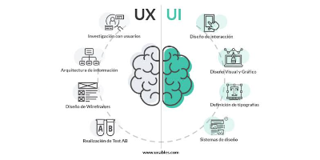
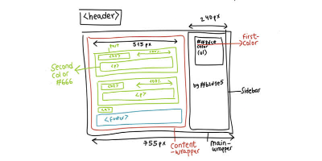
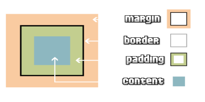

Internet es un conjunto descentralizado de redes de comunicaciones interconectadas, que utilizan la familia de protocolos TCP/IP, lo cual garantiza que las redes físicas heterogéneas que la componen constituyen una red lógica única de alcance mundial.

Un ISP es una empresa que te brinda acceso al internet. Piénsalo como un portal que conecta tu computadora, smartphone u otro dispositivo con el vasto mundo en línea. Los ISPs también ofrecen servicios adicionales como correo electrónico, alojamiento web y más. Al pagar una suscripción a un ISP, básicamente estás alquilando su red para conectarte a internet.


Una carpeta local está guardada en el disco duro de tu propia computadora, mientras que una carpeta remota se encuentra en otro dispositivo o en un servidor externo

La Experiencia de usuario (UX) se refiere a cómo se siente una persona al interactuar con un producto digital, mientras que la Interfaz de usuario (UI) es el aspecto visual y los elementos con los que interactúa en la pantalla

La maquetación web es el proceso de estructurar, organizar y distribuir los elementos visuales y de contenido (como textos, imágenes y videos) de una página en internet para que sea estética, funcional y fácil de usar

El modelo de cajas (box model) en HTML y CSS es un sistema que usa el navegador para representar cada elemento de una página web como una caja rectangular
